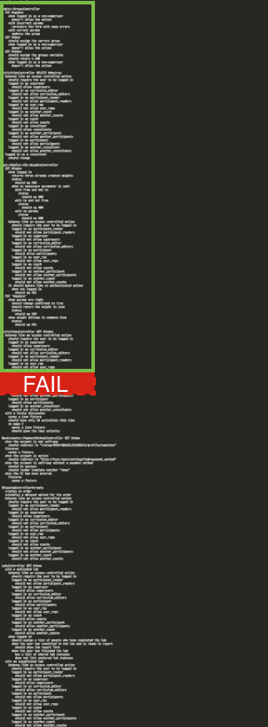
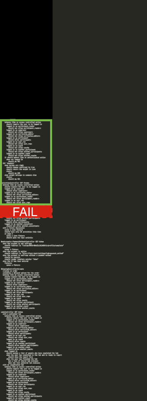
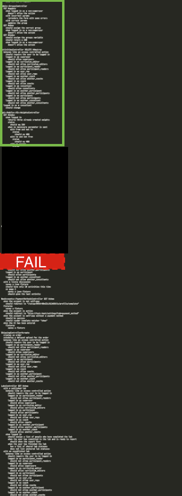

class: center, middle, orange, small-font <img alt="omada" src="images/omada_logo.png" height=200 width=200> ## Eliminating Inconsistent Test Failures ## Austin Putman, @austinfromboston ??? Hello folks Since you're sitting here at 4pm on a Thursday, I assume you don't know where the bar is. As a public service announcement, there is a bar on the first floor of this hotel, I expect that's where the main track is taking place. I'm Austin Putman, VP of Engineering for Omada Health. At Omada, we support people at risk of chronic diseases like diabetes make crucial behavior changes and have longer, healthier lives. --- class: bottom, right, remark-slide-fullscreen, columned background-image: url(images/Lando_Calrissian.jpg) background-size: cover; # How to Fight Randos ## Eliminating Inconsistent Test Failures ??? I'll start with spoilers, because I want you to have an amazing Railsconf. If it's not what you were looking for don't be shy about exiting. --- class: center, big # Cucumber<BR>Capybara - Database transactions - Threading - Race conditions ??? We're going to spend some quality time with Capybara and Cucumber whose flakiness is legendary, for very good reasons. Let me take your temperature: Can I see hands, how many folks have problems with random failures in their Cucumber or Capybara test suite? --- class: center, big # Rspec - Test pollution - Random seeds - Binary search ??? We'll cover the ways that Rspec does and does not help us track down test pollution. How many folks have had random failure problems in the Rspec suite, like with the model or controller tests? --- class: center, big # Random sources - Faker Data - Times and Dates are crappy - External services ??? In between, we'll review some problems that can dog any test suite. Random data, timezone heck, and external dependencies can all lead to pain. How many people here have had a test fail due to daylight savings time issues? Ben Franklin, you are a menace. --- class: center, big # Random Failures - aka "Randos" ??? Let's talk about eliminating inconsistent failures in your tests, on our team we call this "Fighting Randos". I'm here, giving this talk, because I was stupid and shortsighted. Random failures caused me enough pain that it seemed worth talking about. I chose to try to hit deadlines instead of focusing on build quality, and our team paid a terrible price. Anybody out there feel me on this one? --- class: center, big # Science! ??? Some projects seem to have more random failure problems than others. With such a large, distinguished audience, I'd like to gather some data. - If you write tests on a regular basis, Raise your hand - note % - Keep your hand up if you believe you have experienced an inconsistent test failure - note % - Now, Keep your hand up if you think you're likely to experience one again within the next month - note % - Review %ages Either: So, for many of you this is purely hypothetical. Maybe you don't really write that many tests. Maybe you've been fortunate in your projects or your codes are perfect. Or: So, this is a widespread problem. But I haven't seen a lot of people talking about it. The truth is, while being a wonderful tool, a comprehensive integration suite is a breeding ground for baffling heisenbugs. Then: Some projects this happens a lot and others not so much. I have some superstitions about some "test code smells" that I think lead to random test failures, which I'll share with you soon. But for the folks in the room who haven't lived through this, let's review why we care about this. --- class: center, big # 1<BR> Is That Bad? ??? To understand how test failures can become a chronic productivity blocker, it's necessary to talk a bit about our testing culture. --- class: center, big # Continuous Integration - Jenkins - CI Joe - Travis ??? We have an automated CI machine that runs our full test suite every time a commit is pushed. Every time the build passes, we push the new code to a staging environment for acceptance. How many folks out there have a setup similar to this? --- class: center, big # The usual suspects ??? In the fall of 2012, we started seeing occasional unreproduceable failures of the test suite in Jenkins. We were pushing to get features out the door for a Jan 1st launch date, and we found that we could just re-run the build and the failure would go away. We got pretty good at spotting the 2 or 3 tests where this happened. --- class: center, big # cucumber - and cucumber-rerun ??? So we would check the output of a failed build, and if it was one of the suspect tests, we'd just run the build again, it would pass, staging would deploy, we'd continue marching toward launch. By the time spring rolled around, there were 7 or 8 places that caused problems regularly. We tried to fix them, but since the failures were unreliable, it was hard to say if the problem had been fully resolved. We added a gem called cucumber-rerun, that would re-run the failed specs if there was a problem, and if they passed the second time, call it good. --- class: center, big # Speed daemons - parallel_tests ??? Some folks on our team got ambitious. They suggested that we could speed up the CI run with parallel_tests. cucumber-rerun and parallel_test weren't compatible, so we had a test suite that ran 3 times faster but failed twice as often. --- class: center, big # Bad Jenkins ??? As we came into the fall, we had our first "bad Jenkins" week. On a fateful Tuesday at 4pm, the build just stopped passing. There were anywhere from thirty to seventy failures. Some were the usual suspects, but dozens of them were from previously solid specs. None failed in isolation. After 2 days, we got a clean rspec build, but cucumber would fail. The failures could not be reproduced on a dev machine or even on the CI machine when run outside the build. --- class: center, big # Mysterious benefactor ??? Over the weekend, someone pushed a commit and we got a green build. There was nothing special in that commit. We had tried a million things, but no single change obviously led to the passing build. The next week we were back to our usual 15% failure rate. We could push stories to staging again, we were still under deadline pressure... --- class: center, big # We are idiots ??? we shrugged and moved on. Maybe someone wants to guess what happened next? --- class: center, big # Very bad Jenkins ??? Yeah, It happened again. We turned off parallel_tests because we couldn't even get a coherent log of which tests were causing the errors. We started commenting out particularly problematic tests. Still, there were a number of seemingly innocuous specs that would fail regularly but not consistently. Tests that had enough business value to make us very reluctant to comment them out. We re-instated cucumber-rerun and its buddy, rspec-rerun, which mostly worked. --- class: center, big # Everything is terrible ??? We were making progress, but the build issues continued to show up in the negative column in our retrospectives. There were several problems with the situation. --- class: center, big # Reduced trust ??? # Reduced trust When build failures happen 4-5 times per day, they stop being a red flag. Everyone on the team knows that the most likely explanation is a random failure. The default response to a build failure becomes ... --- class: center, big # Run it again ??? That's right, simply run the build again. What happens next? --- class: remark-slide-fullscreen, center background-image: url(images/consistent_failures.jpg) # Missing actual failures ??? Well, occasionally we break things for real. But we stopped noticing because we started expecting CI to be broken. Sometimes other pairs would pull the code and notice legitimate failures. Sometimes we thought we were having a "bad Jenkins" week, and on the 3rd or 4th day we would notice the actual failures. This was bad. --- class: center, big # QA and Acceptance blocked ??? Our system depends on green builds to mark code that can be deployed to staging and production. Without green builds, stories can't be delivered and reviewed. So we stopped getting timely feedback. Meanwhile, the reviewer gets a week's worth of stories delivered in a giant clump. That means they have less time to pay attention to detail on each delivered feature. And *that*, folks, means crappier products. --- class: center, big # Can't #Shipit ??? Need a quick bugfix? Forget about it! You've got a 20% chance your bugfix build will fail for no reason. Maybe code has to ship anyway because the app is mega-busted? In this case, we would re-run the failed tests on our local machines, then cross our fingers and ship. So, in effect, "Works on my machine" became our policy for deploying code to production. --- class: center, big # TDDeath .center[] ??? At the most extreme, people lose faith in the build and eventually in the tests. This didn't happen to us, but I had to explain to management that key features couldn't be shipped because of problems with the test server. And they wanted to know a whole lot more about the test server. And it was clear that while a working test server had their full support, an unreliable test server was pretty clearly a business liability that would need to be resolved. The test server is supposed to solve problems. That is the only story I like to tell about it. --- class: center, big # Randos ??? As we begin to fight back, we personified the random failures. They became randos, a rando-attack, a rando-storm, and most memorably --- class: center # Rando Backstabbian <img src=images/IMG_0545.jpg width=400> ??? And once we began to identify the huge costs we were paying on this technical debt, we knew that Rando had to die. --- class: center, big # 2<BR> What Goes Wrong? ??? We had a pair working on the test suite full time for about three months. We tried about a thousand things, and some of them worked. I'm going to pass along the answers we found and the hypotheses we didn't disprove. Honestly I'm hoping that you came to this talk because you've had similar problems and you've found better solutions. What follows is a selection of ours. --- class: center, big ## Finger of Blame # Cucumber<BR>Capybara ??? Cucumber, Capybara, and Poltergeist are definitely part of the problem. I've talked to enough other teams that use these tools extensively to know that the results are simply not as deterministic as we'd like. Fundamentally, you're using multiple threads, and asserting against a browser environment. --- class: center, big ## Finger of Blame # "Browser Env" ??? So "browser environment" is a euphemism for a complex piece of software that itself is a playground for network latency issues, rendering hiccups, and callbacks. So your tests need to be written in a very specific way to prevent the poor threads from getting confused and smashing into each other. If you happen to use the right style out of the gate, you may never notice any problems. --- class: center, big ## Never assume - the page has loaded - markup you are asserting against exists - AJAX requests finish - stuff happens at normal speed ??? # Never assume - the page has loaded - markup you are asserting against exists - AJAX requests finish - stuff happens at normal speed --- class: center, middle # Checking that the page has loaded ```ruby visit user_path # hope that the page loaded within('.user_profile') do page.should have_content(name) end ``` ??? Always make sure the markup exists before asserting against it. New capybara is supposed to be better at this, and they've improved in many ways. I do not trust them. This is a good example of a lurking Rando due to a race condition in your browser. Capybara is supposed to wait for the page to load before continuing, but I find it has medium success. --- class: center, middle # Bolt it down ```ruby visit user_path # check yourself before you select yourself page.should have_css('.user_profile') within('.user_profile') do page.should have_content(name) end ``` ??? We used to have something called the wait_until block, which would stop execution until a condition was met. That was nifty, since it replaced the earlier practice of just sticking sleep statements into the code and hoping you got the timing right. But modern Capybara has done away with the externally available wait_until block. They still use it internally with the matchers have_css and have_content. So be sure to assert that something exists before you try to do anything with it. --- class: center, middle # Be patient ```ruby def be_patient(new_timeout=20, &block) original_timeout = Capybara.default_wait_time Capybara.default_wait_time = new_timeout block.call ensure Capybara.default_wait_time = original_timeout end ``` ??? The default timeout for capybara assertions is 5 seconds. Sometimes we need to increase that. In our case, the usual culprit is file upload time. --- class: center, big ## Finger of Blame # Race conditions ??? I would be out of line to give this talk without talking about race conditions. Whenever you create a situation where a sequence of key events doesn't happen in a predetermined order, you've got a potential race condition. The winner of the race is random and thus can create random outcomes in your test suite. --- class: center, big ## Finger of Blame # AJAX ??? Another great example is AJAX. your javascript running in Firefox may or may not complete its AJAX call and render the response before the test thread makes it assertions. Capybara tries to fix this by retrying assertions with a timeout, but it doesn't always work. Clicking a button to submit a form and then going to another page or refreshing the page might cut off the POST request, especially if it's an AJAX request. --- class: center # AJAX: Wait for it ```ruby def wait_for_ajax_result wait_until(10) do page.evaluate_script('$.active') == 0 end end ``` Credit @mikegehard, @pivotallabs ??? You can fix this by adding an explicit wait into your cucumber steps when you need to rig the race. jQuery provides a handy counter of all the active XHR requests outstanding, so you don't have to break a sweat. --- class: center,middle ## Finger of Blame # Database transactions ```ruby @sandwich = Sandwich.create(name: "hoagie") visit sandwiches_path page.should have_content('hoagie') ``` ??? Here's another regular offender -- creating database objects from within the test thread. So what's wrong with this approach? If you are using Mysql, maybe nothing at all. That's because Mysql has the transaction hygiene of a roadside diner. If you are using Postgres, which we are, it has stricter rules about transactions, this can create a world of pain. --- class: center, big # Threads & Database connections ??? The test code and the Rails server are running in two different threads. This effectively means different database connections, which means different transaction states. There is some shared database connection code out there by Jose Valim, but I haven't had great results with it. I think I've heard something about shared, mutable resources being problematic. --- # Race Condition: Resource Contention ``` SAVEPOINT active_record_-1 PG::SyntaxError: ERROR: syntax error at or near "-" LINE 1: SAVEPOINT active_record_-1 ``` ??? Let's say you luck out and both threads are in the same database transaction. Now, both the test thread and the server thread are issuing checkpoints and rollbacks against the same connection. Sometimes one thread will reset to a checkpoint after the other thread has already rolled back the last transaction. Result: Rando. --- class: big, center # DB-backed object solutions ??? So you want to create some state in your application to run your test against, but you can't trust the test thread and the server thread to read the same database state. What do you do? --- class: center, big # Immutable database - fixture_builder ??? On our project we use a single set of fixture data, fixed at the beginning of the test run. We use Ryan Dy's excellent fixture_builder gem to combine the nice maintainable characteristics of factoried objects with the set-it-and-forget-it simplicity of fixtures. Any state that needs to exist across multiple tests is stored in a set of fixtures used throughout the test suite. --- class: center, big # The truth - about fixture_builder ??? Unfortunately our fixture builder definition file is 840 lines long, and as dense as a master's thesis. It takes about 2 minutes to rebuild the fixture set, which happens when we re-bundle, change the factories, or change the schema. fortunately this only happens a couple of times a day. At our stage, we think the right solution is to use fixture_builder sparingly. Use it for cucumber tests, and core shared models for Rspec. Don't build a DC comics multiverse in your fixture setup file. --- class: center, big # Mutex it - omadahealth/capybara_sync ??? A key technique we've used to prevent database collisions is to put a mutex on access to the database. This is crazy, but our app can make more than one connection to the server at once. And that is a great place to breed race conditions. Unless we have a mutex, to ensure the server only responds to one request at a time. In effect, we use this to rig the race. You can check it out on github at omadahealth/capybara_sync --- class: center, big ## Finger of Blame # Faker ??? Some of the randomness in our test suite was due to the inputs we gave it. Our code depends on fixtures and factories. The factories use randomly generated fake data to fill in names, zip codes, and text fields. There are good reasons to use random data here. It regularly exercises edge cases without engineers having to think of them. The code should work the same regardless of what zip code someone is in. But sometimes it doesn't. --- class: center, middle # Faked Out ``` Faker::Address.zip ``` ??? For example, did you know that Faker includes Guam and Puerto Rico in the states that it might generate for someone? And we don't include those in our states dropdown. So when a Cucumber test edits an account for a user that Faker has placed in Guam, their state is not entered. That leads to a validation failure. That leads to Cucumber not seeing the expected results. A test run with different fixtures will not reproduce the failure. We always rebuild our fixtures between test runs on CI. --- class: center, middle ## Finger of Blame: # Time / Date ``` Time.zone.now != Time.now Time.zone.today != Date.today ``` ??? Another, subtle input to your code is the current time. Our app sets itself to the user's time zone to present time-dependent data, like which week of our program you are on in the middle of Saturday night. This was our policy. We always used zone-aware time calls. --- class: center, big # Policy failure ??? I found over 100 places where we neglected to use zone-aware time calls. Many of them were fine -- there's usually nothing wrong with epoch seconds. It only takes one misplaced call to Time.now to create a failure It's best to just forget about Time.now and always use Time.zone.now. Same goes for Date.today. Unsurprisingly, I found a bunch of these failures while attending Rubyconf in Miami. These methods create random failures because your database objects can be in a different timezone than your machine's local timezone. --- class: center, middle, big ## Finger of Blame: ## External Dependencies ??? Any time you depend on a third-party service in your tests, you introduce a possible random element. S3, Google Analytics, Facebook, -- any of these things can go down, be slow, or just break. Additionally, they all depend on the quality of your local Internet connection. --- class: big, center # 3<BR>Fix It ??? So I'm going to suggest that if you are affected by random failures, it's important to reproduce the failure. It is not only possible, it is critical. Any problem that can be reliably reproduced can be solved. Well, it can be investigated. --- class: big, center ## Fix It # The Data - fixtures, eh? - .sql dump ??? When you're trying to reproduce a random failure, you'll need the same database objects used by the failing test. If you use factories and there's not a filesystem record, when a test starts to fail randomly you'll want to document the database state at the time of failure. This will mean yaml fixtures, or an SQL dump, or something else clever. --- class: big, center ## Fix It # The Network - webmock, vcr ??? Another source for randomness is network data. API calls and responses are input for your code. Libraries like webmock and VCR allow us to replay canned responses to 3rd party services. If you are trying to reproduce a failure in a test that has third party dependencies, you'll want to use webmock to capture and replay those API responses. --- class: center, big ### Fix It ## Share Buttons <img alt=social_empty src=images/no_social_here.png width=500> ??? In Cucumber tests, you'll want to remove Google analytics, Facebook like buttons, etc. These third party services can slow down page load time and create unnecessary failures. --- class: center, big # The "external" build ??? If you're replaying all your network calls, how do you know the external API hasn't changed? You want to test the services your code depends on. So you need a build that does that. But it should not be in the main build. The purpose of the main build is to let the team know when their code is broken, and it should do that as quickly as possible. A separate, "external" build should test that interactions with third party services are still sane. --- class: center, big # 4<BR> ## Deep Dive: Test Pollution ??? I want to talk about another reason that tests fail randomly. Rspec runs all your tests in a random order, every time. Obviously, this introduces randomness. But there is a reason for it. The reason is to help you stay on top of test pollution. --- class: center, big ## Finger of Blame # Test Pollution ??? Test Pollution is when state that is changed in one test persists and influences the results of other tests. The changed state can live in process memory, in a database, on the file system, or in an external service -- lots of places. --- class: center, big # And the problem is...? ??? Sometimes the polluted state causes the subsequent tests to fail incorrectly. Sometimes it causes the subsequent tests to PASS incorrectly. This was such a rampant issue in the early days of Rspec that the Rspec team made running the tests in a random order the default as of Rspec 2. Thanks Rspec, now any test pollution should stand out. But what if your team ignores random test failures for a year or so? --- class: center, big # How were we to know? ??? Here are some clues that your issue may be test pollution. - the affected tests *never* fail when run in isolation -- never ever - Rather than throwing an unexpected exception, test pollution failures take the form of returning different data than expected - you haven't been checking for test pollution --- class: center, big # Reproducing Test Pollution ??? - Run the test suite in the same order - Use fixtures and VCR cassettes from the failed build --- class: center, middle # Reproducing Test Pollution: Identify the Random Seed ```rspec Randomized with seed 22164 ``` ??? Maybe you've seen this cryptic text at the end of your rspec test output. It's not completely meaningless. 22164 is your magic key to re-run the tests in the same order as the build that just ran. --- class: center, middle # Reproducing Test Pollution: Use the Seed ```ruby #.rspec --colour --format documentation --seed 22164 ``` ??? Modify your dot-rspec file to include the seed Be sure to change the format to documentation as well as adding the seed. --- class: center, big ## Reproducing Test Pollution # Re-use your data ??? The problem of test pollution is fundamentally about incorrectly persisted state -- so the state that is being persisted is important. You'll want to ensure that the data in your reproduced build is identical to the failed build There's a lot of ways to do this. Lock your factories down so your users always have the same data or make a record of the models generated by your factories. You'll want to make sure you're reproducing the network responses as well, using VCR or webmock. --- class: center, big ## Reproducing Test Pollution # Run it and pray ??? You've got your random seed. You've got your data from the failed build. Rerun the specs. If you see the failure repeated, Celebrate! You've correctly diagnosed test pollution and you're on your way to fixing it. If you don't see the failure, maybe it's not test pollution. Or maybe there is another aspect of your build environment that needs to be duplicated. --- class: center, big ## Debugging Test Pollution # Now what? ??? So say you've reproduced the problem. You still have to diagnose what is causing the pollution. You know that running the tests in a particular order creates a failure. --- class: center, big ## Debugging Test Pollution # Find out more ??? The problem with test pollution is that there is a non-obvious connection between where the problem appears, in a failed test, and its source, in another test case. You can find out about the failure, using print statements or a debugger. You might get lucky and be able to figure it out. In a complex codebase with thousands of tests, though, the source of the pollution will be a mystery. --- class: center, big ## Debugging Test Pollution # Tighten feedback loops ??? Just running through the suite to reproduce the failure and get more data might take 10 minutes. And this is terrible -- waiting 10 minutes for feedback creates cognitive depletion All of the stack you’ve built up in your brain to solve this particular problem slowly disintegrates. You start working on other problems or check your facebook page while the tests are running. You lose your focus. That's how Rando wins. Fortunately, we can discard large amounts of complexity and noise by using a stupid process that we don't have to think about. --- class: center, big ## Debugging Test Pollution # Binary Search ??? In code, debugging via binary search is a process of repeatedly dividing the search space in half until you locate the smallest coherent unit the exhibits the desired behavior. --- class: big  ## Binary Search ## The Search Space ??? So we have the output of a set of specs we ran in documentation mode. This is sort of the high-level overview. In the middle, here, we have our failure. And we know the cause has to happen before the failure, because causality. So this green block up top is called the candidate block, or the search space. --- class: big  ## Binary Search # Step Zero ??? So, practically, we split the search space in half, and remove half of the search space. If the failure re-occurs, we know that the cause is in the remaining block. --- class: big  ## Binary Search # Step One ??? But hey, sometimes you've got more problems than you know. So it's good to test the other half of the search space as well. If your failure appeared in step 0, you expect not to see the failure here. If you ALSO see the failure here, you may have multiple source of test pollution, OR, more likely, test pollution isn't your problem at all and the problem actually exists outside the search space. --- class: big, center ## Finger of Blame # Rspec ??? Now here's a hiccup. Binary search requires us to remove large segments of the test suite to narrow in on the test that is causing the pollution. This creates a problem, because random ordering in the test suite changes when you remove tests. Yeah, that’s right -- there’s no way to effectively perform a binary search using a random seed. --- class: center, middle # Rspec::Config#order_examples  ??? Here’s the good news: it *is* possible to manually declare the ordering of your rspec tests, using an undocumented configuration option: `order_examples`. `config.order_examples` takes a block, which will be passed the collection of rspec examples after Rspec has loaded the specs to be run. Just reorder the examples in your preferred order and return that set from the block --- class: big, center, middle ## rspec_manual_order - Documentation comes out, documentation goes right back in - github: austinfromboston/rspec_manual_order ??? But how do we find the exact order? Earlier I suggested you run rspec with the documentation format. This is more readable for humans, and more readable for computers too. With rspec_manual_order we can capture that output and use it to order the examples passed to the block. --- class: big, center ## Debugging Test Pollution # Crushing It ??? Once you've reduced the search space to a single spec or a suite of examples, you’ve put monkey brain in a position to shine against your test pollution issue. --- class: big, center, middle ## Eliminating Random Test Failures ??? I've gone in depth into test pollution issues because it's amenable to investigation using simple techniques. Binary Search and reproducing the failure state are key debugging skills that you will improve with practice. When I started looking into our random failures, I didn't know we had test pollution issues. Turned out that we weren't resetting the global timezone correctly between tests. This was far from the only problem I found, but without fixing this one, our suite would never be clean. --- class: center, big # F*cking Snowflakes ??? Every random failure you are chasing has its own unique story. There are some in our code that we haven't figured out yet, and there are some in your code that I hope I never see. The key to eliminating random test failures is... --- class: big, center # Don't Give Up ??? Today we've covered things that go wrong in Cucumber and Capybara, things that go wrong in Rspec, and general sources of random behavior in your test suite. Hopefully you are walking out of here with at least one new technique to improve the reliability of your tests. We've been working on ours for about 8 months and we're in a place where random failures occur less than 5% of the time. We set up a tiered build system to run the tests sequentially when the fast parallel_build fails. Most importantly, when new random failures occur, we reliably assign a team to hunt them down. If you keep working on your build, eventually you will figure out a combination of tactics that will lead to a stable, reliable build that earns the trust of your team. --- class: center, middle <img alt="omada" src="images/omada_logo.png" height=200 width=200> # Thank You! @austinfrmboston @omadahealth Database Threads: search://"space vatican capybara" Hunting test polllution: search://"rspec test pollution" ??? Several folks wearing Omada gear are in the audience, they did the work to make this happen, so feel free to ask them questions about it as well.